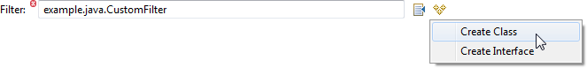
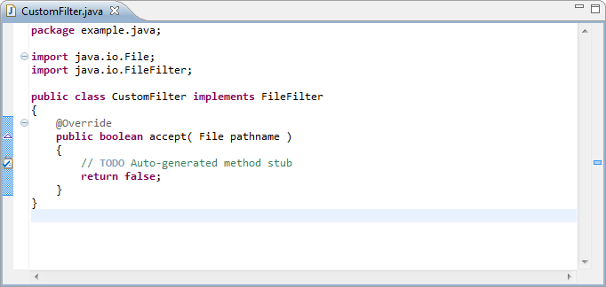

Transparently cast between collections and strings. The following rules have been added:
Example
The following two expressions are equivalent.
${ "z" IN List( "x", "y", "z" ) }
${ "z" IN "x,y,z" }Determines if an object is of specified type. The object to be checked is the first operand and the type is the second operand. The type must be a fully-qualified Java class name.
Example
${ InstanceOf( 12345, "java.lang.Number" ) }
${ InstanceOf( SampleProperty, "org.eclipse.sapphire.samples.ISampleModelElement" ) }Use services infrastructure to specify dependencies between properties. Existing annotations such as @DependsOn and @NoDuplicates are now backed by DependenciesService implementations.
Example
@DependsOn( "Name" )
ValueProperty PROP_ID = new ValueProperty( TYPE, "Id" );
Value<String> getId();
void setId( String value );Example
public class CustomDependenciesService extends DependenciesService
{
@Override
protected void compute( Set<ModelPath> dependencies )
{
// Compute the list of extensions.
}
}@Service( impl = CustomDependenciesService.class )
ValueProperty PROP_NAME = new ValueProperty( TYPE, "Name" );
Value<String> getName();
void setName( String value );Specify file extensions with expression language capable @FileExtensions annotation or with a completely custom implementation of FileExtensionsService.
Example
@Type( base = Path.class )
@AbsolutePath
@MustExist
@ValidFileSystemResourceType( FileSystemResourceType.FILE )
@FileExtensions( expr = "${ LossyFormat ? "jpeg,jpg" : "png,gif" }" )
ValueProperty PROP_FILE_PATH = new ValueProperty( TYPE, "FilePath" );
Value<Path> getFilePath();
void setFilePath( String value );
void setFilePath( Path value );Example
public class CustomFileExtensionsService extends FileExtensionsService
{
@Override
public void initFileExtensionsService( IModelElement element,
ModelProperty property,
String[] params )
{
// Optionally register listeners to invoke refresh method when the list of extensions
// may need to be updated.
}
@Override
protected void compute( List<String> extensions )
{
// Compute the list of extensions.
}
@Override
public void dispose()
{
super.dispose();
// Remove any listeners that were added during initialization.
}
}@Type( base = Path.class )
@AbsolutePath
@MustExist
@ValidFileSystemResourceType( FileSystemResourceType.FILE )
@Service( impl = CustomFileExtensionsService.class )
ValueProperty PROP_FILE_PATH = new ValueProperty( TYPE, "FilePath" );
Value<Path> getFilePath();
void setFilePath( String value );
void setFilePath( Path value );The alignment guides can be toggled by the user via a context menu and the default state can be specified by the developer in the diagram definition.
Example
<diagram-page>
<guides>
<visible>true</visible>
</guides>
</diagram-page>There are two more diagram context menus to assist diagram auto layout: auto layout horizontally and auto layout vertically. When the Sapphire diagram editor is opened, if it can't find the corresponding layout file, it'll attempt to do a horizontal auto layout.
The Java type support has been further improved with addition of an action that can create a new Java type if the specified type name cannot be resolved.
Example
@Type( base = JavaTypeName.class )
@Reference( target = JavaType.class )
@Label( standard = "filter" )
@JavaTypeConstraint( kind = { JavaTypeKind.CLASS, JavaTypeKind.INTERFACE }, type = "java.io.FileFilter" )
@MustExist
@Required
ValueProperty PROP_FILTER = new ValueProperty( TYPE, "Filter" );
ReferenceValue<JavaTypeName,JavaType> getFilter();
void setFilter( String value );
void setFilter( JavaTypeName value );Since @JavaTypeConstraint annotation in this example specifies that the property can reference either a class or an interface, the user is presented with a choice after clicking on the create button.

Once the appropriate option is selected, the new type is created and opened in the Java editor. The created type derives from the type specified in @JavaTypeConstraint annotation and is formatted according to user's format preferences.
